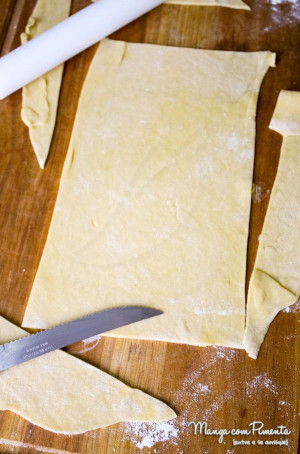

Massa Caseira
Menu de receitas

Descrição
Massa caseira que servirá como base para o preparo de diversos pratos.
Lasanha, ravioli, tagliateri etc.
Ingredientes
- 100g farinha de trigo - preferencialmente grano duro;
- 100g sêmola / semolina - preferencialmente grano duro;
- 2 ovos;
- sal;
Modo de Preparo
- Em um vasilhame grande - pode preparar diretamente na bancada - despeje a farinha e a semolina. Misture um pouco e abra um pequeno buraco no centro da mistura dos dois ingredientes.
- Acrescente os dois ovos no centro deste buraco e coloque uma pitada de sal.
- Com um garfo, comece a bater os ovos sempre com movimentos circulares. Vá agregando a farinha que está em volta aos poucos.
- No momento que não for mais possível misturar com o garfo, utilize as mãos para agregar toda farinha que está no recipiente.
- Sove a massa por alguns minutos. Caso ela esteja muito macia e grudando nas mãos, acrescente aos poucos farinha ou semolina. Caso esteja dura, acrescente um pouco de água.
- Embrulhe a massa em um papel plástico, evitando totalmente o contato com ar. Deixe-a descansar na geladeira por pelo menos 1 hora.
Menu de receitas